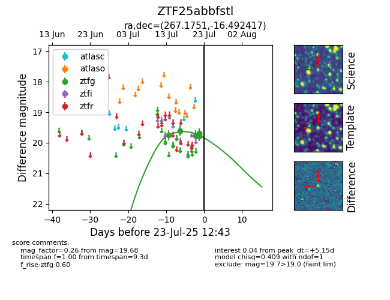

Target ZTF25abbfstl at 2025-07-23 12:43, see:
FINK: fink-portal.org/ZTF25abbfstl
Lasair: lasair-ztf.lsst.ac.uk/objects/ZTF25abbfstl
ALeRCE: alerce.online/object/ZTF25abbfstl
alt names
ZTF25abbfstl (ztf,fink)
coordinates:
equatorial (ra, dec) = (267.1751,-16.49242)
galactic (l, b) = (11.0453,+5.81116)
photometry
last ztfg=19.68
6 ztfg detections
